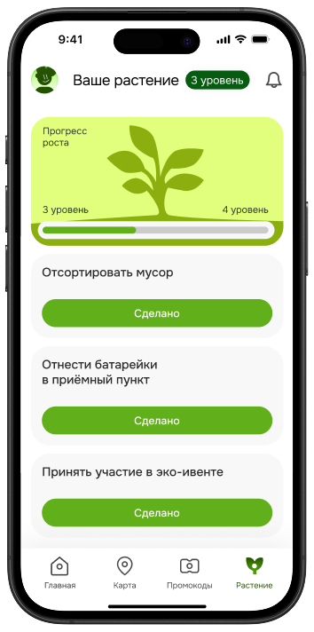
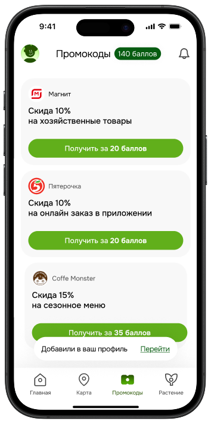
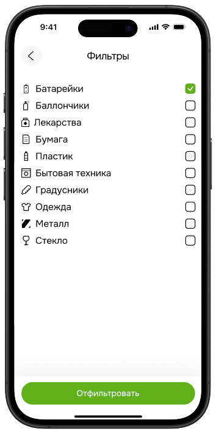
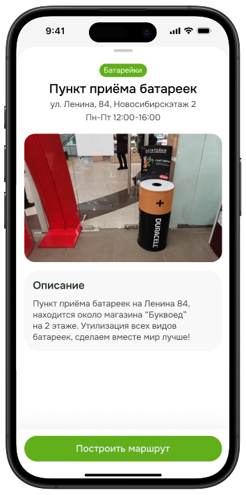

Мобильное приложение по
дисциплине «Разработка ИТ-проекта» Эколокал
2025

Несмотря на общий интерес к чистоте и комфортной городской среде, и жители, и туристы сталкиваются с ухудшающейся экологической ситуацией: частым смогом от лесных пожаров, плотной пылью, оседающей на улицах и в жилых районах. Для решения этой проблемы была разработана концепция мобильного приложения Эколокал.


Реализованы светлая и темная темы веб-приложения, также все состояния экранов.



